| Source file: | hilbert.{c, cpp, java, pas} |
| Input file: | hilbert.in |
| Output file: | hilbert.out |
| Starting curve | Transformation 1 | Transformation 2 | Transformation 3 | Transformation 4 | |
| H1 | 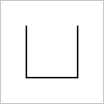 | 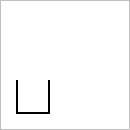 | 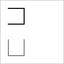 | 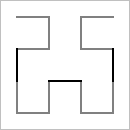 | |
| H2 | 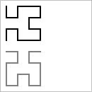 | 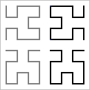 | 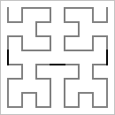 | ||
| H3 | 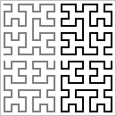 | 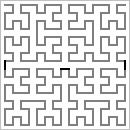 | |||
| H4 | 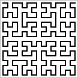 | 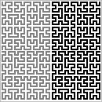 | 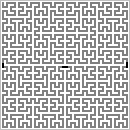 |
David Hilbert proved the existence of a very counter-intuitive curve that fills space. The construction of the Hilbert curve is based on a sequence of curves, H1, H2, H3, H4, ... composed of horizontal and vertical segments. Each curve lies in the unit square [0, 1] × [0, 1]. H1 contains just three segments, connecting the points (¼, ¾) to (¼, ¼) to (¾, ¼) to (¾, ¾). Hn is defined recursively in terms of Hn-1, for n = 2, 3, ... by four transformations:
| Figure 1 | Figure 2 |
| 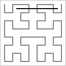 | 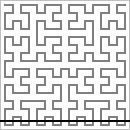 |
| Segment from
(2/8, 7/8) to (7/8, 7/8) crossing H3 three times. |
Segment from
(0/16, 1/16) to (16/16, 1/16) crossing H4 sixteen times. |
The coordinates of vertices of Hn are odd multiples of ½n+1. The coordinates of horizontal segment endpoints will always be multiples of ½n. Hence the specified horizontal segment can only cross vertical segments in Hn.
Input consists of one to 100 data sets, one per line, followed by a final line containing only 0. Each data set consists of four integers separated by blanks in the form
which represents Hn and the segment from (x1/2n, y/2n) to (x2/2n, y/2n), where 0 < n < 31, x1 < x2, and each of x1, x2, and y lie in the range 0 to 2n, inclusive.
The output is one integer per line for each data set: the number of intersections of Hn with the segment. Caution: A brute force solution that computes each intersection individually will not finish within the one minute time limit. As you can see below, there may be more than one billion intersections for any data set.
Example input:
3 2 7 7 4 0 16 1 30 1 1073741823 1 0 |
Example output:
3 16 1073741822 |
Last modified on October 26, 2002 at 7:25 PM.